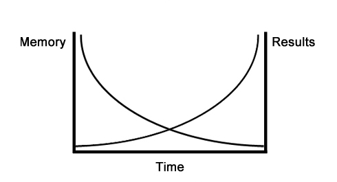
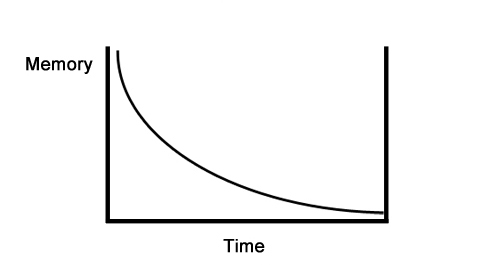
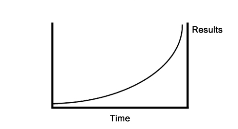

Sooner or later this day would come anyway, right? And if 100 days ago we were really anticipating the moment when we will finish the programm, then now we are a little bit sad that this whole game has come to en end. Still, we have to sum up all the things and we have prepared one last infopost for you.
100 days is, by any means, a big challenge. And during all these days you've managed to get some significant results! Now training is a part of your daily lifestyle, now you know what to do, to get the results you want both in training and nutrition, and now you are ready to go on by yourself! And this is really cool!
Our SOTKA program was developed as solution to all those numerous question people keep asking on the internet. We wish we had such a solution back then we were starting our training way. You'd bet it would save us hell lot of time.
We want to thank all the people, who participated in creating this program: LeonZ, mashera, mtbrDot, Safrayt, Brom, WorkoutRun, Nadja2809, Mutamir, nastya_p. Because of them (and lots of other people) this program became reality.
Special thanks goes to Oleg Grudko, without whom this program would not be even close to the . Another special thanks goes to mike38217 for developing our iOS app. And to savostyan for creating an ebook, which became the basis for our mobile apps. Two more special thanks to Burcov and AleksandrKas, who helped us a lot with designs in the very beginning.
We would also like to thank all our Curators, who have not feared to step up after finishing the program and became leaders in their cities and regions. Their help and support is what helped us to bring SOTKA to a whole new level and get thousands and thousands of new people familiar with it.
We hope that our program will be just a beginning for you and you will keep developing yourself and becoming a better person. And that you will help other become better too.
That's it. There is just one more thing to say. Our last present for you.

This graph is our last present. Look at it precisely, becuase understanding this graph can significantly change your life once and for ever. Doubt that? Take a look at your life from a side, look at the things which you have accomplished, at the results, which you have now. This graph explains why they are the way they are. If you enjoy your life, this graph will explain why you enjoy it. If you don't like your current life, this graph will also explain why. And, what is much more important, this graph will show you what you need to do, to change your life for better.
The graph could be divided into three parts and for total understanding we should go through each part one by one. At first you may think that we are talking about some obvious stuff, but please read it to the end, because with each paragrath the story will become more and more interesting. We promise! Let's start with "Memory-Time" curve:
This graph is our last present. Look at it precisely, becuase understanding this graph can significantly change your life once and for ever. Doubt that? Take a look at your life from a side, look at the things which you have accomplished, at the results, which you have now. This graph explains why they are the way they are. If you enjoy your life, this graph will explain why you enjoy it. If you don't like your current life, this graph will also explain why. And, what is much more important, this graph will show you what you need to do, to change your life for better.
The graph could be divided into three parts and for total understanding we should go through each part one by one. At first you may think that we are talking about some obvious stuff, but please read it to the end, because with each paragrath the story will become more and more interesting. We promise! Let's start with "Memory-Time" curve:

To understand this part of the graph try to answer the following simple questions. What did you have for breakfast today? Probably answering this would not bring and problems to you (ofcause if you are not reading this infopost before breakfast). What did you have for breakfast yesterday? This one is a little bit trickier, but we are sure that still most of people would answer it. What did you have for breakfast a week ago? A month ago? A year ago? The more we go back in time, the less probability is that you could remember the answer to this simple question. And this is exactly what the curve "Memory-Time" shows us on a graph.
As time goes by our memory goes weaker and weaker. That's the happening with which everyone collide. There is a wise ancient chinese proverb about this topic telling "The faintest ink is more powerful than the strongest memory". Anyone would get into trouble trying to remember all the things which happened a year ago, not talking about 5 years or 10 years ago. This is the obvious part of the graph, but we have to told you about it.
Now let's get to the second part of the graph - "Results-Time" curve:
To understand this part of the graph try to answer the following simple questions. What did you have for breakfast today? Probably answering this would not bring and problems to you (ofcause if you are not reading this infopost before breakfast). What did you have for breakfast yesterday? This one is a little bit trickier, but we are sure that still most of people would answer it. What did you have for breakfast a week ago? A month ago? A year ago? The more we go back in time, the less probability is that you could remember the answer to this simple question. And this is exactly what the curve "Memory-Time" shows us on a graph.
As time goes by our memory goes weaker and weaker. That's the happening with which everyone collide. There is a wise ancient chinese proverb about this topic telling "The faintest ink is more powerful than the strongest memory". Anyone would get into trouble trying to remember all the things which happened a year ago, not talking about 5 years or 10 years ago. This is the obvious part of the graph, but we have to told you about it.
Now let's get to the second part of the graph - "Results-Time" curve:

If we try to explain this idea in two sentences, then the results you are having today - are not the results from the actions and decisions you've made today, but the results of actions you have taken and decisions you have made many years ago. This concept is much less known, then previous, but still quite simple for understanding. And if you are reading the last infopost in SOTKA, then you already understand how this concept works. If you spend 30 minutes on workout today, you would not get the body of your dreams right away, would not get healthier or sexier. But if you keep doing 30 minutes workouts, then after a while you will see some drastically changes in yourself. And the more time would pass, the better will be your results!
Another great example of this, which we really like, is about studying and exams and consequences. When you are reading a book - you don't get results straight after you've finished another page. Ofcause, you get some new useful information, but it's just a grit in the ocean. But getting A mark is just the first element in a long chain of consequences. If you have good marks, then you have much more chances landing on a good job, and good job leads you to a whole new world of opportunities!
Last, but not least, is our very favourite example of how this graph works - planting a tree. At the very moment when you put a seed in a soil - you would not see any tree. It will take days, weeks and even months before you will see first results. Needless to say that it will take not years, but decades for a seed to become a big and strong tree. But everytime when you will loook at that tree, you will remember that it has evolved from a very small seed, which was planted many-many years ago.
A page that you read, as well as a push-up which you did, as well as the seed, you have planted - would not bring you results at the moment of making, but their cummulative effect, as the time goes by, can drastically change your life the way you can't even imagine! And now we are heading to the most interesting part!
What happens when these two curves cross? Let's look at the initial picture.
Take a closer look and try to understand what is pictured here. In moment 0 on axis "Time" we can see that an action is taken (or a decision is made). And we remember it very well, but there is no consequences/results yet. If we fast forward to the END moment on axis "Time", for example, 10 years forward, then we will see that even the results are vast, but at the same time we would not even remember of the action or decision, that has led us to them. And this is why this grahp is so damn good!
For example, this graph explains why most people, who gave themselves a promise to start working out on monday drop off after a could of weeks. Because they have moved a little bit right on the axis "Time", so now they still remember their decision (and all the actions they took, all those training sessions, strict dieting and so on) clearly, but they have not got any results yet. At this moment they have a strong feeling that they have made wrong decisions, because they don't get any results.
Another example, which could be explained by this graph. We bet that some of your fellas don't like their work or their relationships or their health or whatever. The particular thing doesn't matter, but what matters is that their current life is the result of all the choices they have made many many years ago and all the actions they have done. Choices and actions they barely could remember. But they remember well what has happened a couple of days before, or last week, so they start to find reasons and answers in the recent events. Or they blaim objective circumstances: bad boss, corrupted government, untrustworthy friends, toxic relationships and etc.
Probably worth noting that the same goes and for the positive things too. If one of your friends finally got the life he or she always wanted, or got a promotion, or met a love of their life, or started travelling around the world, then they will too try to find the reasons in the recent actions and decions, not in the ones which are way too far in the past.
To sum up this infopost, your life in 5 years IS 100% determined by the actions (EVEN THE SMALLEST ONES) you make today. And that's one of the biggest problems of our generation, because we live in the times of smartphones, social networks and instant gratification, and so it's harder and harder to focus on long term perspectives and less and less people are capable of doing it. Remember this and you are going to be just fine!
If we try to explain this idea in two sentences, then the results you are having today - are not the results from the actions and decisions you've made today, but the results of actions you have taken and decisions you have made many years ago. This concept is much less known, then previous, but still quite simple for understanding. And if you are reading the last infopost in SOTKA, then you already understand how this concept works. If you spend 30 minutes on workout today, you would not get the body of your dreams right away, would not get healthier or sexier. But if you keep doing 30 minutes workouts, then after a while you will see some drastically changes in yourself. And the more time would pass, the better will be your results!
Another great example of this, which we really like, is about studying and exams and consequences. When you are reading a book - you don't get results straight after you've finished another page. Ofcause, you get some new useful information, but it's just a grit in the ocean. But getting A mark is just the first element in a long chain of consequences. If you have good marks, then you have much more chances landing on a good job, and good job leads you to a whole new world of opportunities!
Last, but not least, is our very favourite example of how this graph works - planting a tree. At the very moment when you put a seed in a soil - you would not see any tree. It will take days, weeks and even months before you will see first results. Needless to say that it will take not years, but decades for a seed to become a big and strong tree. But everytime when you will loook at that tree, you will remember that it has evolved from a very small seed, which was planted many-many years ago.
A page that you read, as well as a push-up which you did, as well as the seed, you have planted - would not bring you results at the moment of making, but their cummulative effect, as the time goes by, can drastically change your life the way you can't even imagine! And now we are heading to the most interesting part!
What happens when these two curves cross? Let's look at the initial picture.
Take a closer look and try to understand what is pictured here. In moment 0 on axis "Time" we can see that an action is taken (or a decision is made). And we remember it very well, but there is no consequences/results yet. If we fast forward to the END moment on axis "Time", for example, 10 years forward, then we will see that even the results are vast, but at the same time we would not even remember of the action or decision, that has led us to them. And this is why this grahp is so damn good!
For example, this graph explains why most people, who gave themselves a promise to start working out on monday drop off after a could of weeks. Because they have moved a little bit right on the axis "Time", so now they still remember their decision (and all the actions they took, all those training sessions, strict dieting and so on) clearly, but they have not got any results yet. At this moment they have a strong feeling that they have made wrong decisions, because they don't get any results.
Another example, which could be explained by this graph. We bet that some of your fellas don't like their work or their relationships or their health or whatever. The particular thing doesn't matter, but what matters is that their current life is the result of all the choices they have made many many years ago and all the actions they have done. Choices and actions they barely could remember. But they remember well what has happened a couple of days before, or last week, so they start to find reasons and answers in the recent events. Or they blaim objective circumstances: bad boss, corrupted government, untrustworthy friends, toxic relationships and etc.
Probably worth noting that the same goes and for the positive things too. If one of your friends finally got the life he or she always wanted, or got a promotion, or met a love of their life, or started travelling around the world, then they will too try to find the reasons in the recent actions and decions, not in the ones which are way too far in the past.
To sum up this infopost, your life in 5 years IS 100% determined by the actions (EVEN THE SMALLEST ONES) you make today. And that's one of the biggest problems of our generation, because we live in the times of smartphones, social networks and instant gratification, and so it's harder and harder to focus on long term perspectives and less and less people are capable of doing it. Remember this and you are going to be just fine!